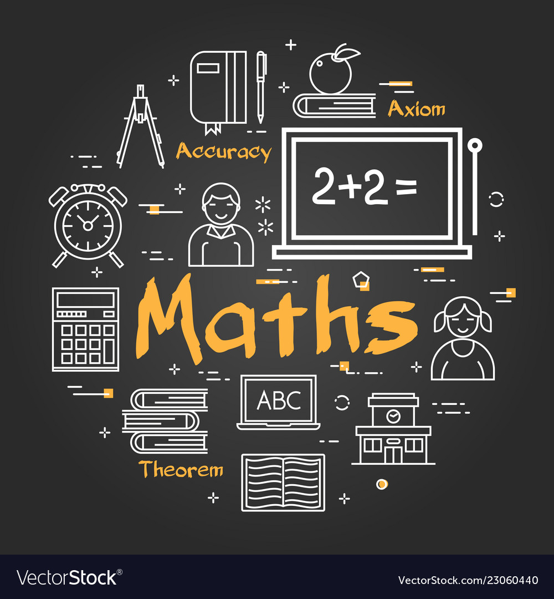
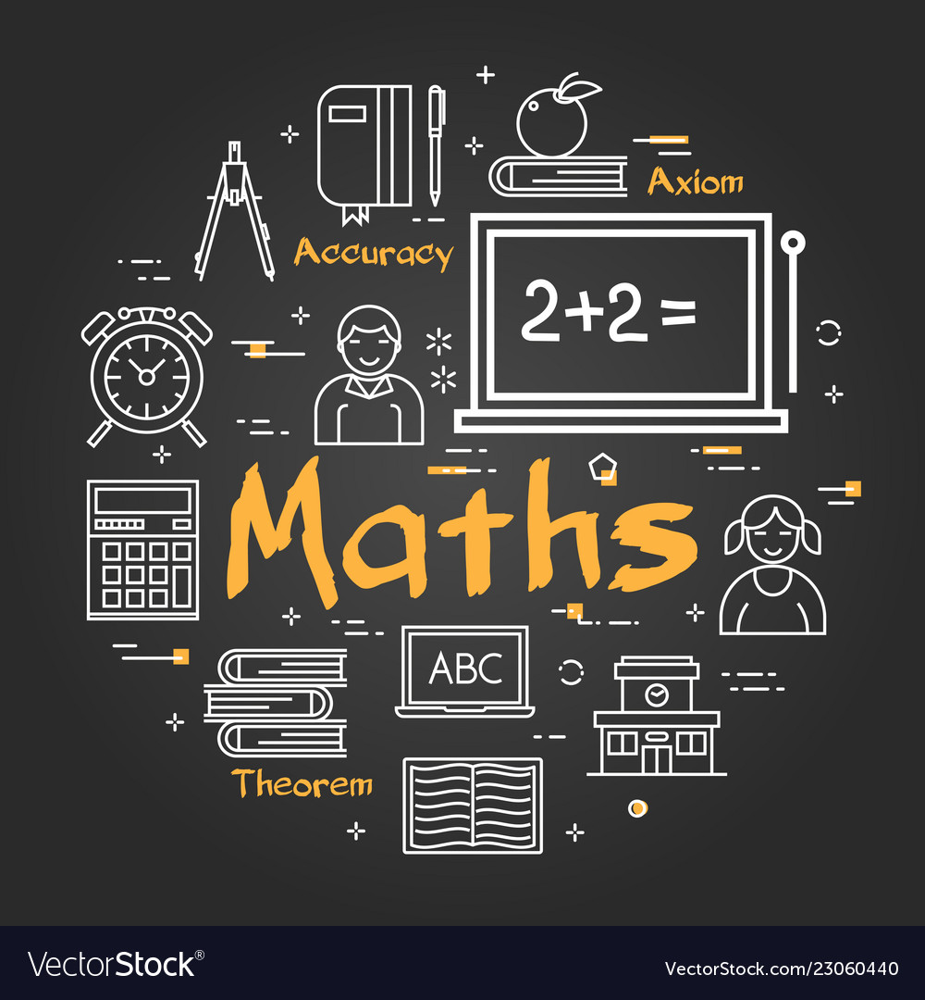

Why SGIT?
SGIT – SG Educational Institutions was established by Bhuvan in the year 2004. The Managing Trustee Shri. N. Raghunath Rao Maanay along with Prof. Sunanda P Jadhav the founder Secretary and Principal founded the institution with a focused vision to impart value based quality education irrespective of social, financial or religious status. Prof. Sunanda P. Jadhav strived to provide education at affordable cost especially to the girl child and her unstinted efforts yielded highly commendable results. From a humble beginning the SGIT group of Educational Institutions is now a leader in the field of education, providing the most modern education while maintaining the rich cultural heritage of the great India.
Courses
Courses are structured educational programs designed to impart knowledge and skills in a specific subject area or field of study. Typically offered by SG educational institutions also courses serve as a structured pathway for students to acquire expertise, whether in traditional academic disciplines such as mathematics and literature or specialized fields like engineering, computer science, or healthcare. Courses vary in duration, ranging from short-term workshops to multi-year degree programs, and they often include a combination of lectures, assignments, exams, and practical experiences. The content and objectives of a course are defined by a curriculum, which outlines the topics to be covered and the expected learning outcomes. Ultimately, courses are fundamental components of the educational journey, providing individuals with the knowledge and competencies they need to pursue their academic and career aspirations.We provide a couse video lectures which are easily accessed to the students.


PROGRAMMES
| Department of Artificial Intelligence & Machine Learning | Department of Computer Science & Engineering | Department of Electronics & Communication Engineering |
|---|---|---|
| Department of Information Science & Engineering | Department of Mechanical Engineering | Department of Electrical & Electronics Engineering |
SGIT ACHIEVEMENTS
Industry Ready
All engineering courses offered at BNMIT, namely, Mechanical Engineering (ME), Electronics & Communication Engineering (ECE) and Electrical & Electronics Engineering (EEE), are integrated with AI & ML, Data Science and Programming courses to prepare industry ready workforce |
Competiton
The ECE team ‘The Trijan Hex’ comprising of six students (Manaswini M, Namratha V, Rachana S, Nisarga Umesh, L Poojith, and K R Pruthvi) secured 2nd position and won a cash prize of INR75,000 in Smart India Hackathon 2020 for ‘Smart Sericulture Systems using IoT and Image Processing’ |
Assessment
The assessment process at BNMIT will emphasize on evaluation-based approach in addition to the examination-based process using formative mode of assessment. This alteration will help us in monitoring students’ academic progress through the watchful process of steady evaluation |
|---|---|---|
Ability Enchancement
To enhance students’ employability, they are kept abreast of latest technological advances. Students are guided to prioritize learning new technological tools and are exposed to best practices and techniques through various on- and off-campus activities |
Placements
Nikhil Sharma – ECE Department has received an international offer with a CTC of INR 22.70 LPA (2022-23). Yashaswini B V – CSE Department has received an offer with a CTC of 13.00 LPA (2022-23). Apoorva Sreesha – EEE Department has received an international offer with a CTC of INR 18.45 LPA (2022-23) |
Summer Internship + fellowship
Students of Mechanical branch have been selected for integrated Ph.D at IISc, Bengaluru on a fellowship from Raman Research Institute, Bengaluru. He is part of the team selected for IISc and also for the South Pole Expedition Team 2018. |
Placements
"In the realm of higher education, 'Sri Ganesha Institute of Technology College' has earned a well-deserved reputation as the undisputed number 1 placement college. With an unwavering commitment to academic excellence, industry-aligned curriculum, and a dedicated placement cell, SG College consistently achieves outstanding placement records year after year. Graduates of this esteemed institution are in high demand, thanks to the strong partnerships the college has cultivated with top-tier companies across various industries. The college's holistic approach to education not only equips students with the knowledge and skills required for their chosen fields but also provides them with invaluable practical experiences through internships and co-op programs. The result is a stellar track record of placing graduates in prestigious roles at renowned organizations, making Sri Ganesha Institute of Technology as the first choice for students aspiring to secure a bright future in their Engineering careers."

College Reviews
Trishul:
"I graduated from Sri Ganesha Institue of Technology last year, and I must say, the placement support here is top-notch. The college has an excellent network with leading companies, and the placement cell works tirelessly to connect students with exciting job opportunities. I landed my dream job in a multinational tech firm even before completing my degree. The campus interviews and career fairs are incredibly well-organized, and the preparation workshops helped me build my confidence for interviews. Overall, Sunrise University truly lives up to its reputation for fantastic placements."
Shiva:
"The placement scene at Sri Ganesha Institue of Technology is impressive, especially for engineering students. I was skeptical at first, but after seeing my friends secure fantastic job offers, I became more confident. The college invites a wide range of companies, from startups to industry giants, ensuring that everyone has an opportunity. The placement cell also offers personalized career counseling, which helped me choose the right career path. The campus atmosphere is vibrant, and the industry connections are strong, making it easier for graduates to secure internships and jobs."
Alumni Review:
"As an alum of Sri Ganesha Institue of Technology, I can attest to the excellent placement track record of this institution. The college not only provided me with a strong academic foundation but also invaluable career support. Even years after graduation, I still benefit from the professional network I built during my time at Sunrise. Many of my classmates have gone on to have successful careers in various fields, which is a testament to the university's commitment to shaping future leaders."
Study Material
"At Sri Ganesha Institute of Technology, accessing study materials is a seamless process designed to support students in their academic journey. Suppose you are enrolled in a Computer Science course. Firstly, you can refer to the comprehensive course syllabus provided by your instructor or accessible through the college's official website. This syllabus acts as a roadmap, detailing the course structure and the required readings. Additionally, the institution employs a user-friendly online learning portal, where course-specific resources are readily available. For your Computer Science course, you can access lecture slides, assignments, and supplementary readings uploaded by your professor. Should you require textbooks, the college library houses a wide range of academic resources, including textbooks, reference materials, and journals relevant to Computer Science. Knowledgeable library staff can assist you in locating the required texts. Furthermore, don't hesitate to seek guidance from your Computer Science professor, who can recommend essential textbooks and provide valuable supplementary study materials such as lecture notes. Engaging with peers can also be invaluable; connecting with fellow students may lead to the discovery of study groups and shared resources, enhancing your learning experience. Finally, explore online educational platforms and visit the college bookstore for additional materials as needed. Sri Ganesha Institute of Technology is dedicated to providing students with comprehensive study resources to foster academic success."
 


CONTACT US
Name:
Email:
Phone Number:
City:
ADMISSIONS
Eligibility Criteria
How to Apply
Selection Process
List of Documents
Education Loan
BNMIT Policy
Admission Contact
Rules & Regulations
Disclaimer
Scholarships
Refund Policy
Our Founder